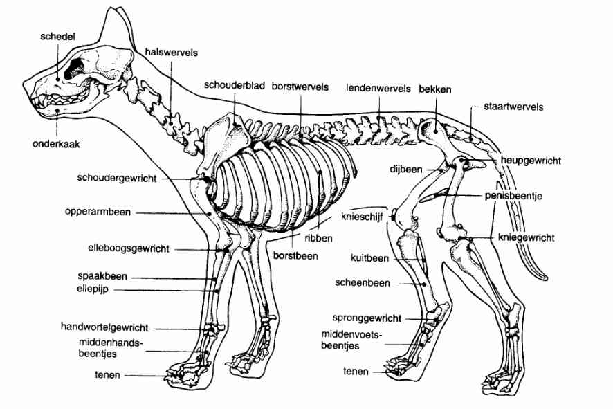

Lichaamsbouw
De anatomie van de hond

Honden behoren tot de klasse van de zoogdieren. Dat betekent dat ze net als mensen al gevormd zijn bij hun geboorte en dat ze door de moeder worden gezoogd. Zij zorgt voor hen tot ze zelfstandig zijn. Honden zijn ook omnivore dieren: dat betekent dat ze een voeding nodig hebben die bestaat uit vlees en/of groenten. In het wild zijn honden en de hondachtigen waartoe zij behoren, roofdieren, die meestal in groep op jacht gaan om de hele groep van voedsel te voorzien. Voor dieren die in groep leven, is lichaamstaal een belangrijk communicatiemiddel. Zo is de anatomie van de hond aangepast aan de jacht en het leven in groep.
Skelet
Vormt de interne structuur die het behoud van het lichaam, met name de wervelkolom, de achterledematen en de voorpoten, garandeert.
- Beschermt de gevoelige interne organen.
- Het skelet beschermt de hersenen en andere zintuiglijke organen, zoals de ogen.
- Het bekken beschermt de organen die zich in de onderbuik bevinden, zoals de baarmoeder.
- De wervels (de wervelkolom) beschermen de zenuwen die het ruggenmerg vormen.
- De ribben beschermen alle organen die zich in de borstholte bevinden, met name het hart en de longen.
- Maakt de beweging mogelijk wanneer de spieren rond de botten en de gewrichten samentrekken. De botten zetten zich in beweging en gewrichten buigen zich. Dankzij de kracht die door de spieren van de achterste ledematen van de hond wordt uitgeoefend, kan hij hoge sprongen uitvoeren en op zijn prooi jagen.
- Produceert bloedcellen.
- Slaat belangrijke mineralen zoals calcium en fosfor op.
Hoewel honden ongeveer hetzelfde aantal botten hebben dan de mens, worden ze anders in beweging gezet en hebben ze een specifieke functie die afgestemd is op de behoeften van roofdieren. De kracht van hun ledematen en de kracht van de kaken stellen hen in staat om op prooien te jagen, terwijl de staart zorgt voor evenwicht en voor een manier om te communiceren.